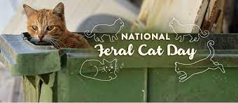

Collaboration with Animal Shelters: Not only do we frequently do TNRs, we also collaborate with local animal shelters in feeding, adopting, and in general taking care of these felines.
Feline Friends Network: Our advocacy collaborates extensively with local animal welfare organizations, veterinary clinics, and experts to help cats and the people who care for them
Community Cats Podcast: The Community Cats Podcast is a key partner in our mission, which plays an important part in spreading our message and lets us much teach about cats in conferences, seminars, and more.
Activities and Participation

National Feral Cat Day: Alley Cat Allies leads the annual National Feral Cat Day, a nationwide event aimed at raising awareness about feral cats and promoting Trap-Neuter-Return. Their active participation in organizing events, campaigns, and educational activities amplifies the impact of our advocacy.
Emergency Responses for Cats: In times of natural disasters or emergencies, Alley Cat Allies participates in providing emergency response and assistance for cats. This includes coordinating rescue efforts, offering shelter, and ensuring the safety and well-being of feral and stray cats affected by such events.